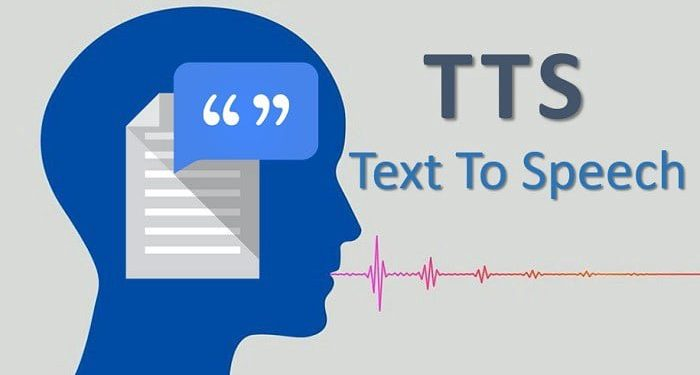

Text-to-Speech in CALL
Summary: A review of research on text-to-speech as listening input, reading support, and a pronunciation model, with attention to the need for active learning tasks.

Speaking Machines:Text-to-Speech (TTS) in CALL
During the past five years, TTS has evolved from being a novelty act “reading machine” to a useful pedagogical aid in computer-assisted language learning. Contemporary neural networks-based TTS systems have achieved significantly more natural prosody and voice quality than their concatenative predecessors, and researchers are investigating the implications of these advances for pedagogical advantage: rapid listening comprehension, improved imitation models, and supportive reading aids for struggling readers.
A review titled “The Application of Text-to-Speech Technology in Language Learning” compiles the results of several studies conducted in the classroom. The authors found that there was a positive effect on reading comprehension and vocabulary acquisition when the learning materials were supported by TTS technology, especially when used in a multimodal setting where the students listened to the text and read it simultaneously. It is essential to highlight the importance of autonomy in learning, as students were able to benefit from the ability to listen to the input as many times as they wanted and at their preferred speed. Nevertheless, the authors also concluded that using TTS technology alone is not enough.
From a technological point of view, Ahmad’s 2024 review describes how current TTS technology is based on deep neural networks that encode both linguistic content and acoustic properties. In comparison to previous rule-based approaches, these models produce more natural-sounding intonation and segmental contrast. According to Ahmad, this technological advancement has a direct effect on the usability of CALL systems, as learners are no longer hindered by the robotic quality of TTS speech. However, he also points out that current TTS technology is still lacking in pragmatic and affective detail.
To complement these results, a multimodal CALL project investigated the comprehension of learners when presented with human-recorded speech versus TTS. Although the learners preferred listening to human voices, there were no significant differences in comprehension scores when high-quality TTS was presented with subtitles and interactive activities. The authors conclude that TTS can be considered pedagogically acceptable for input presentation, especially in large-scale settings or self-access centers, as long as the learners are actively processing the information rather than passively listening.
these studies indicate that TTS is most useful as a component of a larger design for instruction. The advantages of TTS are in scalable listening input, pronunciation practice, and autonomous learning. Nevertheless, researchers emphasize the need for task design, where TTS needs to be accompanied by activities that provide feedback, repetition, and directing attention.